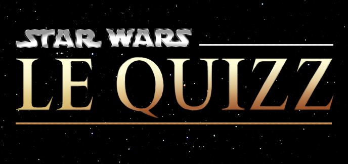

Avez-vous bien lu ?

Voici un questionnaire de 20 questions pour vérifier vos connaissance :
Question 1 : Qui est le père de Luke Skywalker ?
Dark Vador
L'empereur Palpatine
Obi-Wan Kenobi
Padmé Amidala
Question 2 : Qui est Palpatine dans l'épisode I ?
L'empereur de la galaxie
Le président de la république
Le sénateur de Naboo
Le père d'Anakin Skywalker
Question 3 : Quel est le titre de l'épisode IV ?
La Menace Fantôme
Un Nouvel Espoir
L'Empire contre attaque
Le Retour du Jedi
Question 4 : Quel est le métier de Han Solo ?
Chasseur de prime
Contrebandier
Voleur
Réparateur de vaisseau
Question 5 : Hoth est une planète...
Froide
Chaude
Recouverte d'eau
Forestière
Question 6 : Qui fut d'abord sénateur, puis chancelier, et enfin empereur ?
Dark Vador
Valoruum
Palpatine
Tarkin
Question 7 : Quel est statut d'Amidala dans l'épisode I ?
Sénatrice
Impératrice
Reine
Présidente
Question 8 : Quel est statut d'Amidala dans l'épisode II ?
Sénatrice
Impératrice
Reine
Présidente
Question 9 : Qui est la soeur de Luke Skywalker ?
Shmi Skywalker
Padmé Amidala
Rey
Leïa Organa
Question 10 : Comment se nomme le vaisseau de Han Solo ?
Le Slave 1
Le Faucon Millénium
X-Wing
L'Étoile Noire
Question 11 : Quel acteur incarne Qui-Gon Jinn ?
Liam Neeson
Ewan MacGregor
Jake Lloyd
Georges Lucas
Question 12 : Sur quelle planète Luke rencontra-t'il Yoda ?
Tatooine
Naboo
Coruscant
Dagobah
Question 13 : Qui ordonna la destruction d'Alderaan ?
Dark Vador
Palpatine
Tarkin
Kylo Ren
Question 14 : Quelle est l'arme des Jedi ?
Un sabre Laser
Un blaster
Une épée
Un bâton
Question 15 : Quelle actrice incarne Leïa Organa ?
Daisy Ridley
Natalie Portman
Pernilla August
Carrie Fisher
Question 16 : De quoi les Jedi tirent leur pouvoirs ?
L'Énergie
Le Courant
La Force
La Magie
Question 17 : En quelle année est sorti l'Épisode 4?
1976
1977
1980
1983
Question 18 : La planéte des cloneurs se nomme :
Kamino
Géonosis
Tatooine
Coruscant
Question 19 : Quelle est la capitale de Naboo ?
Otoh Gunga
Theed
Mos Eisley
Kashyyyk
Question 20 : Tatooine est-elle une planéte ...
Chaude
Froide
Recouverte d'eau
Forestière
Votre pseudo :
Retour à l'accueil